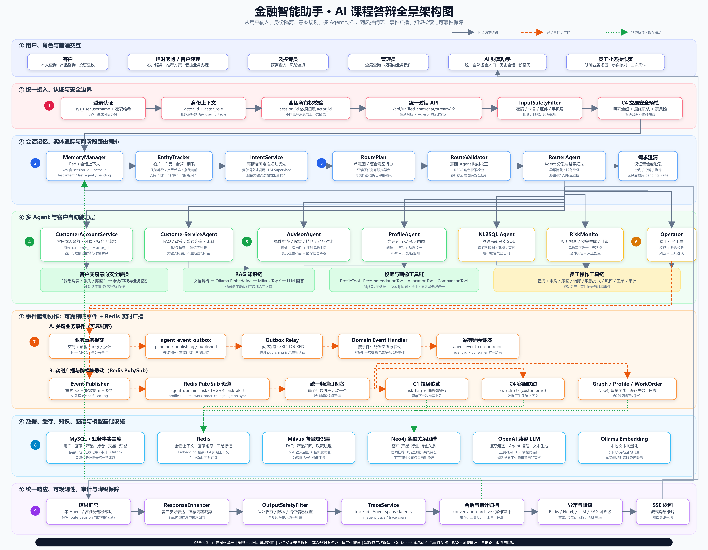

① 用户、角色与前端交互
客户本人查询、产品咨询、投资建议
理财顾问 / 客户经理客户服务、推荐方案、受控业务办理
风控专员 / 管理员预警查询、处置、权限内全局视图
AI 财富助手 / 员工操作页统一自然语言入口与明确业务场景入口
统一入口隐藏复杂性，Router 与 ChatOrchestrator 提供横切管控；跨 Agent 协作以业务事实为起点，通过 Outbox 和 Redis 广播形成可恢复的领域事件链路。

连接语义：HTTP/SSE 承载交互，SQLAlchemy Async 管理事实数据，Redis Pub/Sub 承载领域事件，Neo4j/Milvus 支持关系与语义检索。
工具链：RAG 知识链 · 投顾/画像工具链 · 员工操作工具链；工具只提供原子能力，关键业务决定仍由规则和权限边界约束。
核心原则：先落业务事实，再发布事件；同步只用于金融闸门，跨 Agent 影响通过事件异步协作。
事件含 `event_id`、`event_type`、`source_agent`、客户、关联 ID、时间与不可变 payload，让业务事实可定位、可重放。
MySQL 中的交易、预警与处理状态是事实源；缓存和广播用于加速与协作，不能替代事实判断。
新增 Agent 只需声明生产/消费的领域事件与契约，不应绕过统一入口或自行修改核心风险等级。
上方架构图给出“谁负责什么、数据在哪里、事件如何流动”；以下 14 个场景将这条主线落到真实业务。每个场景均遵循：用户行为 → 路由与业务 Agent → Event Bus → 订阅协作 → Memory 更新 → 用户状态变化。
用户购买基金；客服理解需求，业务操作创建申请，风控审核，画像消费成交事实。
事件：交易金额、产品、状态。Memory：Redis 回执；MySQL 流水/画像；Milvus 服务摘要；Neo4j 客户—产品关系。
“我要转账50万元”；业务操作与安全 Agent 共同核验，风控检查金额、历史行为、账户风险与 AML。
Memory：Redis 待复核；MySQL 审核轨迹；Milvus 核验摘要；Neo4j 资金与风险关系。
持仓集中度过高、账户回撤严重；风控事实广播后，投顾收紧候选池并重算配置。
合规边界：更新动态约束，不自动修改正式 C1-C5 等级。
投顾推荐高收益理财；风控与合规分别检查风险等级、适当性、资产比例与披露。
Memory：推荐版本、审核证据、展示偏好与产品—适当性关系。
用户确认投顾建议；交易 Agent 以审批通过的推荐为输入，执行前再做关键约束复核。
Memory：删除 Redis 待确认单，归档成交、接受反馈、购买理由与持仓图谱。
长期购买新能源基金；画像 Agent 从可信交易事实识别行业偏好、周期和行为模式。
Memory：画像缓存失效；MySQL 偏好/置信度；Milvus 行为摘要；Neo4j 行业偏好图谱。
交易频率突然增加；数据分析产生有证据的洞察，风控再按规则评估并决定是否预警。
Memory：短期交易风险、洞察证据、预警解释和异常关系。
发现单一行业暴露过高、现金不足；分析 Agent 输出组合诊断，投顾生成再平衡方案。
Memory：最新诊断、配置偏好、语义解释与行业暴露关系。
重大政策变化；市场 Agent 形成可验证影响标签并向风控、投顾、客服、画像、合规广播。
Memory：短期市场上下文、政策影响、语义原文和政策—行业—产品图谱。
用户资产显著增加；画像变更驱动服务层级、策略和产品准入重新评估。
Memory：旧缓存失效、变更证据、客户摘要及客户层级—产品准入关系。
“最近亏损太大，不想投资了”；客服识别恐惧/高压力，用带 TTL 的信号改善后续服务。
合规边界：情绪只影响沟通策略，绝不直接改变正式风险等级。
销售金融产品；合规 Agent 审核宣传、风险提示和适当性，风控复核动态约束。
Memory：审批状态、材料版本、合规条款与产品—规则—客户层级关系。
异地登录并修改收款账户；安全 Agent 检测身份与设备风险，风控施加资金保护约束。
Memory：临时冻结、审计证据、风险标记、核验摘要和账户—设备—风险关系。
“为什么推荐产品亏损？”；客服受理，投顾回溯推荐，风控核验，画像保存服务信号，合规审核对客结论。
Memory：工单进度、投诉与回溯证据、服务限制、脱敏摘要和可追溯关系图谱。
以 Outbox + 广播 + 幂等消费取代 Agent 之间的硬编码串行调用；任一模块可演进，业务事实仍保持一致。
从一次申购、一次大额转账或一次投诉出发，演示预检、预警、工单、推荐约束、客户沟通与记忆回写。
把正式风险等级、动态风险约束、情绪与市场信号分层存储；避免“模型一句话”直接改变合规核心数据。